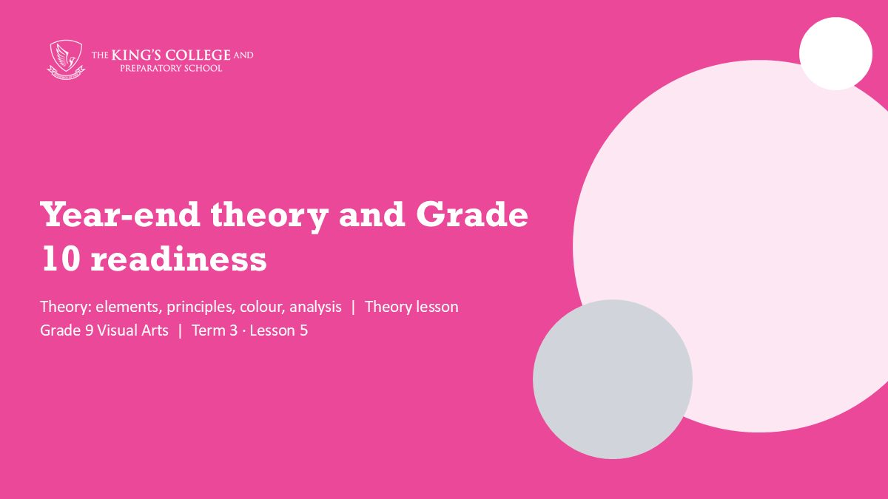

Term 3 · Lesson 5 · Theory lesson
Year-end theory and Grade 10 readiness
Start here
Today I will
- Revise the year's theory for the exam
- Write a timed visual analysis of a South African artwork
- Know what Grade 10 Visual Arts involves
Think back to Week 1. What can you do now in art that you could not do at the start of the year?
Words to know
- Visual analysis
- Looking at and writing about an artwork in five levels.
- Formal analysis
- The elements and principles, where they are and what they do.
- Context
- The time, place and events in which the work was made.
- Opinion supported by facts
- Your judgement backed by evidence.
- One-point perspective
- Receding lines meet at one vanishing point on the horizon.
- Resistance art
- Art made to oppose an unjust system such as apartheid.
Slides

Notes
Year-end exam revision: vocabulary, elements and principles, the 5-step visual analysis of a South African artwork (Muafangejo, Kentridge or Sekoto), the timeline and one-point perspective; what Grade 10 Visual Arts involves.
What the year-end exam covers
- Vocabulary: Theory, history and practical words from the booklet.
- Elements and principles: Name them, define them and find them in an artwork.
- Visual analysis: The five levels, applied to a South African artwork.
- Art history: The timeline from the Renaissance to today, and South African art.
- One-point perspective: Horizon line, vanishing point, orthogonals and a simple drawing.
Grade 10 Visual Arts: what comes next
- Practical work: Bigger projects that grow from your own ideas and research.
- Sourcebook: Your visual journal becomes a record of how each artwork develops.
- Visual culture studies: Art history and analysis, from prehistoric art onwards.
- Skills from Grades 8–9: Vocabulary, the five levels and drawing skills you already have.
See it, name it, explain it, place it in its time, then judge it with facts.
Practical
You need: Unseen artwork on screen, lined paper or journal, quiz sheet
Timed analysis and vocabulary quiz
- Look at the unseen South African artwork for two minutes without writing.
- Write one paragraph per level: first reaction, formal analysis, content, context, opinion (25 minutes in total).
- Use at least four SAGS words as evidence in your formal analysis.
- Write the 10-question vocabulary quiz (10 minutes).
- Mark the quiz with the class and note three words to learn.
Year-end exam follows: theory (vocabulary, elements and principles, visual analysis, art history) and one-point perspective.
Test yourself
- Name the five levels of visual analysis in order.
- What makes a level 5 opinion strong?
- Name the three parts of one-point perspective.
Show answers
1. First reaction, formal analysis, content, context (zeitgeist), opinion supported by facts. 2. Reasons and evidence from the artwork and its context. 3. Horizon line, vanishing point and orthogonal lines.
Finished early?
Practise for the exam with a short analysis.
- Choose a South African artwork from your booklet (Sekoto, Muafangejo or Kentridge).
- In your VJ, write one sentence for each of the five levels.
- Use at least two SAGS words as evidence in level 2.
- Check that your opinion in level 5 has a reason from level 2, 3 or 4.